Креирано 2025-12-01 Mon 07:31, притисни ESC за мапу, Ctrl+Shift+F за претрагу, "?" за помоћ
Баве се удруживањем објеката и класа, коришћењем наслеђивања, композиције и делегације, у циљу формирања сложенијих структура.
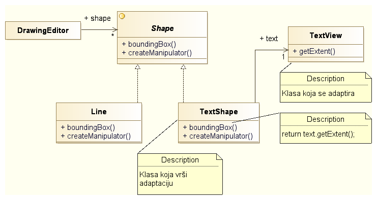
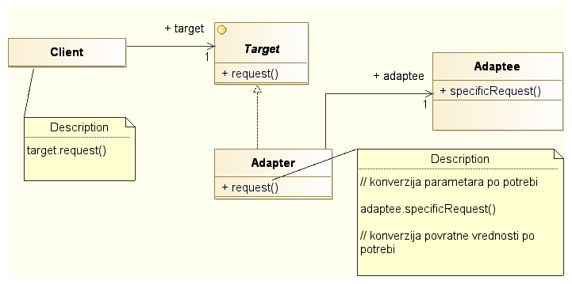
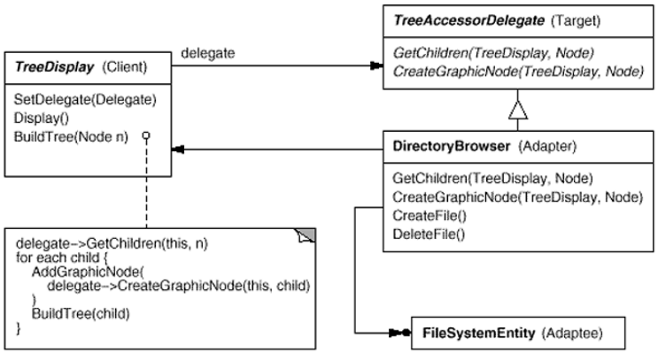
Раздвајање абстракције од имплементације тако да се могу независно мењати.
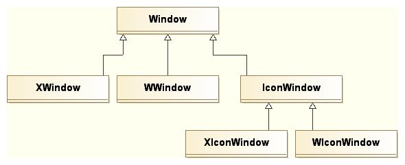
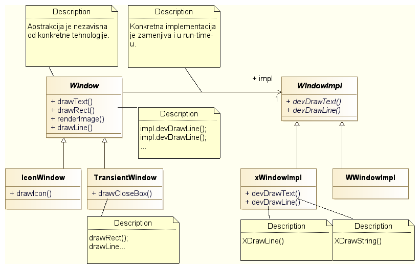
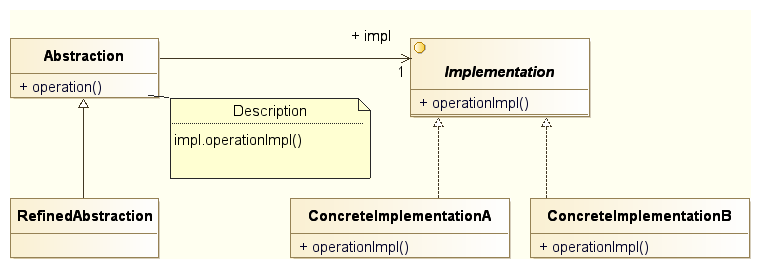
Одлука о инстанцирању конкретне имплементације:
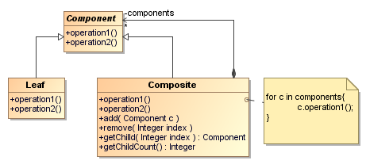
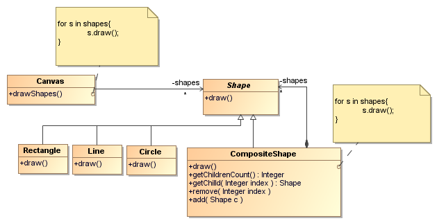
GOF књига – методе за манипулацију child елементима у Component апстрактној класи.
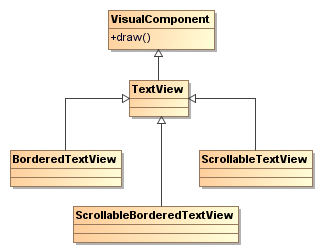
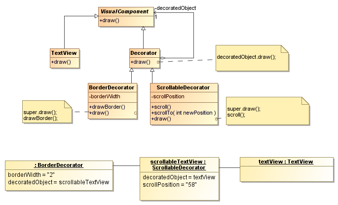
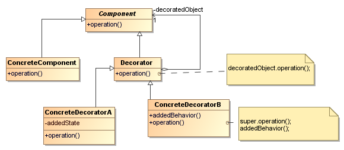
function withLogging(WrappedComponent) {
return function(props) {
console.log('Rendering:', WrappedComponent.name);
return <WrappedComponent {...props} />;
};
}
const EnhancedButton = withLogging(Button);
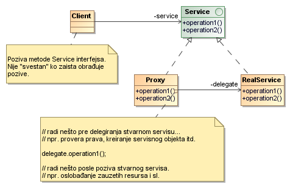
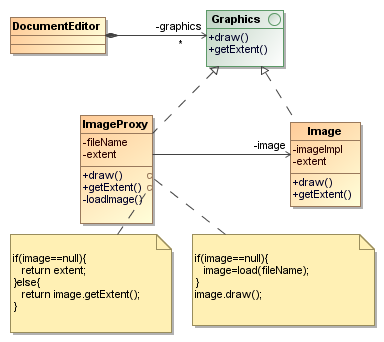